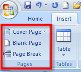
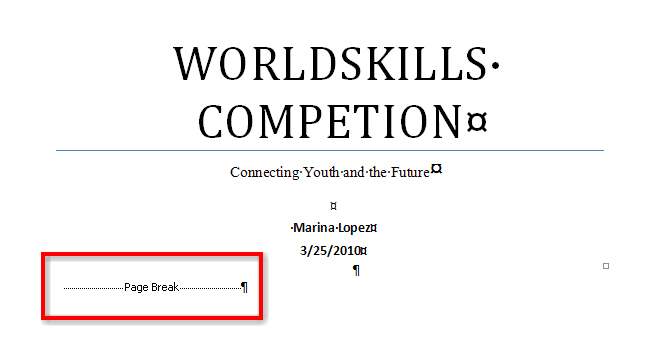
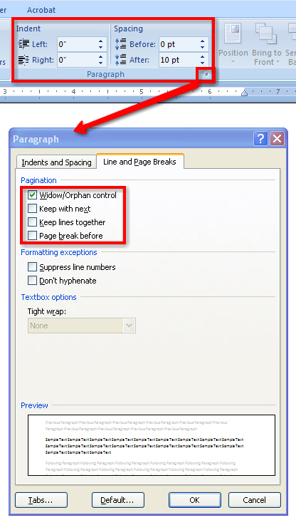

Microsoft product screen shot(s) reprinted with permission from Microsoft Corporation.
Word will automatically insert a new page when there is enough text for more than one page, but sometimes you will need to control where Word positions page breaks in order to create a professional-looking document that is easy for the reader to follow. There are several options for controlling when and where page breaks occur.
You can insert a page break when you want to break pages in a particular location, or when you want to insert additional pages to include items such as a bibliography or a title page. Before inserting a page break, it is important to position your cursor where you want the break to occur. To insert the page break, you can either use the Control + Enter command on the keyboard, or you can use the Pages group in the Insert tab.
When you insert a page break and turn on the Show/Hide (¶) function in the Home tab, you will see the non-printing symbol.

Microsoft product screen shot(s) reprinted with permission from Microsoft Corporation.
Sometimes page breaks will occur in bad locations in a document, which can be confusing for your reader. When a break happens within a paragraph and leaves a single line of text at either the top or the bottom of the page, this is known as widows and orphans. A widow occurs when the last line of a paragraph appears by itself at the top of the next page; an orphan occurs when the first line of a paragraph appears by itself at the bottom of a page. To control the way Word paginates a document, you can use the dialog box launcher in the Paragraph group in the Home tab to access the Line and Page Breaks menu. Use this menu to Control widows and orphans, or to keep lines and paragraphs from separating.

Microsoft product screen shot(s) reprinted with permission from Microsoft Corporation.
To create a 2" margin on the first page of the report and a 1" margin on the second and succeeding pages of the report, go to the Page Layout tab, Page Setup group, Margins command; and, on the second page of the report, change the margin to 1" and select Apply: from this point forward.
Now that you know how to create, format, and manage the content flow of a report, let’s move on to adding references to validate your research.